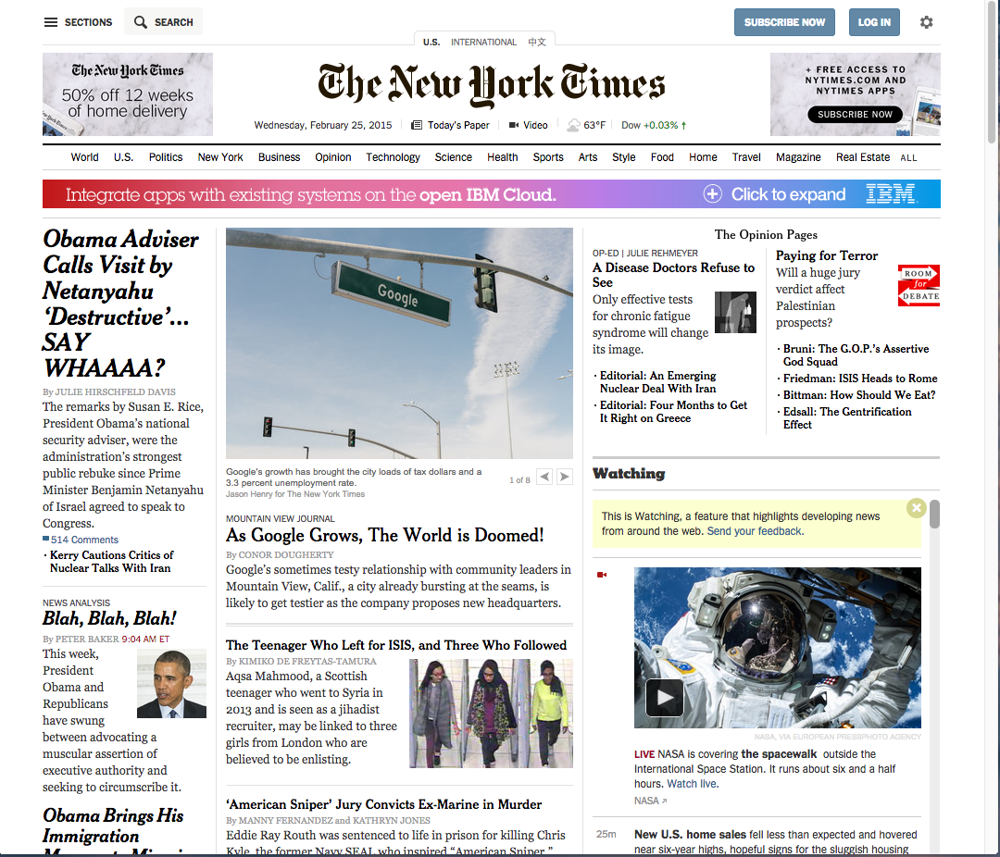
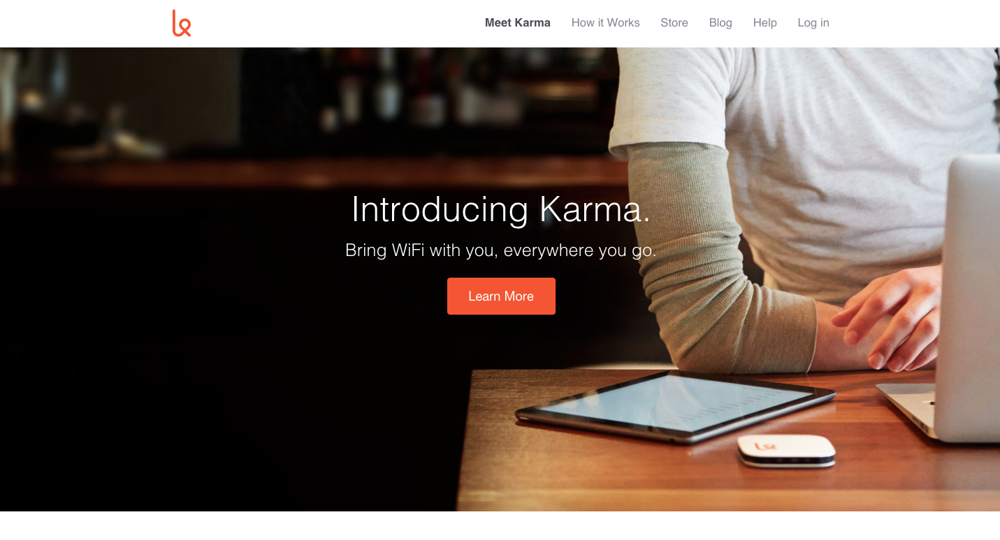

Projects
- 
Hack the NY Times
- 
Karma Landing Page Clone
My name is Mike Collins
This all started as a hobby for me. The more I kept on designing websites through Wordpress the more I found myself passionate about bringing my ideas to life. I find myself wanting to learn more about design and programming. I have an eye for clean design and functional interfaces.
Away from the tech I like to appreciate nature and its beauty. I like to go out for a nice surf session. Sometimes I just sit out in the ocean and think. Its kind of weird because to me its like a cleansing. I come out of the ocean with my mind clear and ready for the grind.
I am originally from far west El Paso, Texas. I relocated to Orlando, Florida and can not say I regret it. Although, I do miss the mexican food from back home!
I love to surf! No better feeling in the world then catching a fun wave!
This is a hard one. I guess I would have to say one that I am having fun at!
"Your work is going to fill a large part of your life, and the only way to be truly satisfied is to do what you believe is great work. And the only way to do great work is to love what you do." -Steve Jobs
I have been messing with tech since I was a kid. I started working in IT when I was a teenager, and in 2006 I decided to become a Firefighter. I was a Firefighter for 8 years. When I started to have some back complecations in 2012 I decided my health was more important and voluntarily left the Fire Dept. I am now back in the IT field and a free lance web developer pursuing in becoming a software engineer.
I have always been a big fan of Radiohead, but lately I been mixing it up with some reggae and indie rock! I am open minded.